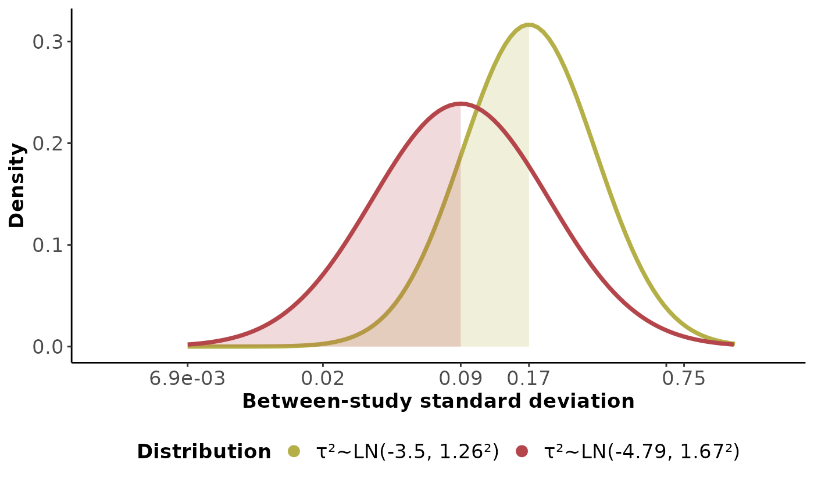
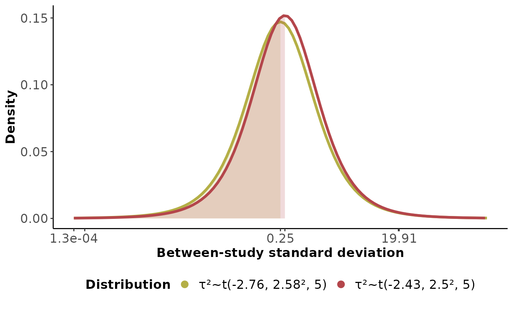
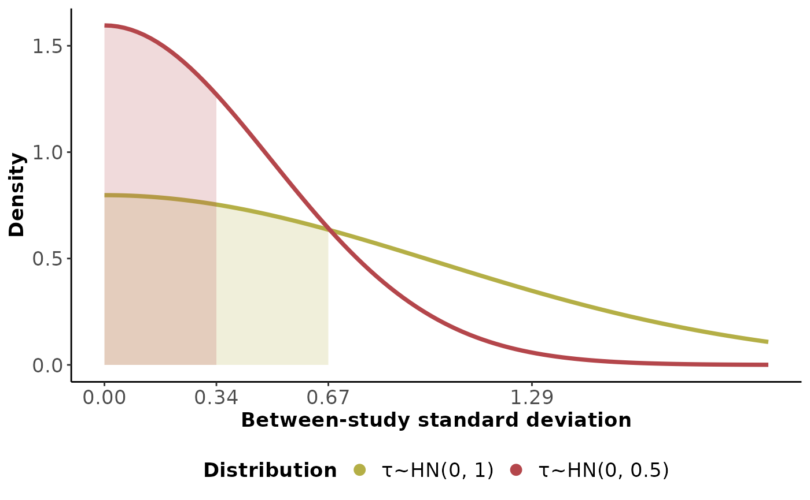

Visualising the density of two prior distributions for the heterogeneity parameter
Source:R/heter.density.plots_function.R
heter_density_plot.RdCreating the density plot of two prior distributions for the between-study variance (log-normal and location-scale t distributions) or between-study standard deviation (half-normal distribution).
Usage
heter_density_plot(
distr,
heter_prior1,
heter_prior2,
heter1 = "tau",
heter2 = "tau",
caption = FALSE,
x_axis_name = TRUE,
y_axis_name = TRUE,
axis_title_size = 13,
axis_text_size = 13,
legend_title_size = 13,
legend_text_size = 13
)Arguments
- distr
Character string indicating the prior distribution. Set
distrequal to one of the following:"lognormal","logt", or"halfnormal", which refers to a log-normal, location-scale, or half-normal distribution.- heter_prior1
A numeric vector with two values for the first prior distribution: 1) the mean value and 2) the standard deviation. When
distr = "halfnormal", the first value should zero and the second a non-negative value referring to the scale parameter of the distribution.- heter_prior2
A numeric vector with two values for the second prior distribution: 1) the mean value and 2) the standard deviation. When
distr = "halfnormal", the first value should zero and the second a non-negative value referring to the scale parameter of the distribution.- heter1
Character string indicating the heterogeneity parameter for
heter_prior1. Setheter1equal to one of the following:"tau", or"tau_omega", which refers to a between-study heterogeneity or between-design heterogeneity (inconsistency), respectively. This argument is relevant only whendistr = "lognormal"ordistr = "logt". The default is"tau".- heter2
Character string indicating the heterogeneity parameter for
heter_prior2. Setheter2equal to one of the following:"tau", or"tau_omega", which refers to a between-study heterogeneity or between-design heterogeneity (inconsistency), respectively. This argument is relevant only whendistr = "lognormal"ordistr = "logt". The default is"tau".- caption
Logical to indicate whether to report a caption at the bottom right of the plot. It is relevant only when
distr = "lognormal"anddistr = "logt". The default isFALSE(do not report).- x_axis_name
Logical to indicate whether to present the title of x-axis ('Between-study standard deviation'). The default is
TRUE(report).- y_axis_name
Logical to indicate whether to present the title of y-axis ('Density'). The default is
TRUE(report).- axis_title_size
A positive integer for the font size of axis title.
axis_title_sizedetermines the axis.title argument found in the theme's properties in the R-package ggplot2. The default option is 13.- axis_text_size
A positive integer for the font size of axis text.
axis_text_sizedetermines the axis.text argument found in the theme's properties in the R-package ggplot2. The default option is 13.- legend_title_size
A positive integer for the font size of legend title.
legend_text_sizedetermines the legend.text argument found in the theme's properties in the R-package ggplot2. The default option is 13.- legend_text_size
A positive integer for the font size of legend text.
legend_text_sizedetermines the legend.text argument found in the theme's properties in the R-package ggplot2. The default option is 13.
Value
A plot with the density of two selected prior distributions for the heterogeneity parameter. Two different colours are used to discern the distributions. A legend is also created with the name and hyper-parameters of the selected prior distributions. The filled area under each curved indicates the values up to the median of the corresponding distribution. The x-axis present the 0.1
heter_density_plot also returns a table with the percentiles of each
distribution.
Details
Use this function to inspect the shape of the distribution and the range of
between-study variance or standard deviation values before you define the
argument heter_prior in run_model) to run random-effects
network meta-analysis.
Turner et al. (2012), Turner et al. (2015), and Rhodes et al. (2016) provide predictive prior distributions for the between-study variance for a binary outcome, measured in the log-odds ratio scale, and a continuous outcome, measured in the standardised mean difference scale, respectively.
References
Rhodes KM, Turner RM, Higgins JP. Predictive distributions were developed for the extent of heterogeneity in meta-analyses of continuous outcome data. J Clin Epidemiol 2015;68(1):52--60. doi: 10.1016/j.jclinepi.2014.08.012
Turner RM, Jackson D, Wei Y, Thompson SG, Higgins JP. Predictive distributions for between-study heterogeneity and simple methods for their application in Bayesian meta-analysis. Stat Med 2015;34(6):984--98. doi: 10.1002/sim.6381
Turner RM, Davey J, Clarke MJ, Thompson SG, Higgins JP. Predicting the extent of heterogeneity in meta-analysis, using empirical data from the Cochrane Database of Systematic Reviews. Int J Epidemiol 2012;41(3):818--27. doi: 10.1093/ije/dys041
Examples
## Two empirical priors for between-study variance of log odds ratio.
heter_density_plot(distr = "lognormal",
heter_prior1 = c(-3.50, 1.26),
heter_prior2 = c(-4.79, 1.67))
#> $Density_plots

#>
#> $tabulated_percentiles
#>
#>
#> Table: Percentiles in standard deviation
#>
#> |Percentiles | τ²~LN(-3.5, 1.26²) | τ²~LN(-4.79, 1.67²) |
#> |:-----------|:------------------:|:-------------------:|
#> |2.5% | 0.05 | 0.02 |
#> |25% | 0.11 | 0.05 |
#> |50% | 0.17 | 0.09 |
#> |75% | 0.27 | 0.16 |
#> |97.5% | 0.60 | 0.47 |
#>
## Two empirical priors for between-study variance of standardised mean
## difference.
heter_density_plot(distr = "logt",
heter_prior1 = c(-2.76, 2.58),
heter_prior2 = c(-2.43, 2.50))
#> $Density_plots

#>
#> $tabulated_percentiles
#>
#>
#> Table: Percentiles in standard deviation
#>
#> |Percentiles | τ²~t(-2.76, 2.58², 5) | τ²~t(-2.43, 2.5², 5) |
#> |:-----------|:---------------------:|:--------------------:|
#> |2.5% | 9.1e-03 | 0.01 |
#> |25% | 0.10 | 0.12 |
#> |50% | 0.25 | 0.30 |
#> |75% | 0.64 | 0.74 |
#> |97.5% | 6.93 | 7.38 |
#>
## Two half-normal prior distributions for between-study standard deviation
heter_density_plot(distr = "halfnormal",
heter_prior1 = c(0, 1),
heter_prior2 = c(0, 0.5))
#> $Density_plots

#>
#> $tabulated_percentiles
#>
#>
#> Table: Percentiles in standard deviation
#>
#> |Percentiles | τ~HN(0, 1) | τ~HN(0, 0.5) |
#> |:-----------|:----------:|:------------:|
#> |2.5% | 0.03 | 0.02 |
#> |25% | 0.32 | 0.16 |
#> |50% | 0.67 | 0.34 |
#> |75% | 1.15 | 0.58 |
#> |97.5% | 2.24 | 1.12 |
#>